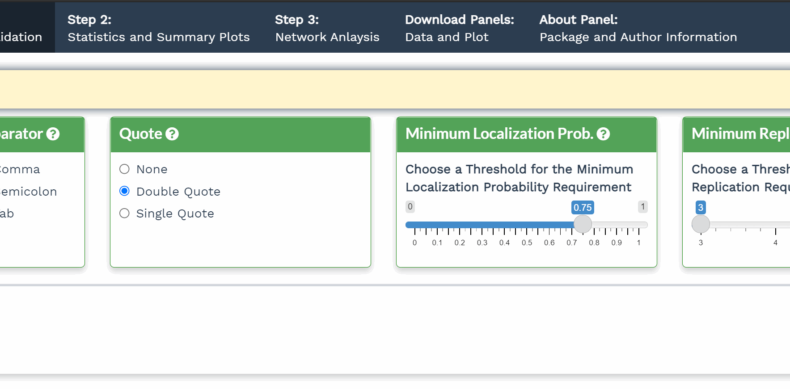

Phosphorylation of proteins can regulate their turnover and activity, and phosphorylation at different sites can facilitate distinct programs of regulations. Studying phosphorylation relays in a network is thus important to understand plant responses, however downstream analyses, including data-driven network inference, is still a bottleneck. We developed a Shiny application, NetPhorce, which serves as a portal for users who have little or none experience in coding and mathematical analysis for exploratory and in-depth analyses of phosphoproteomics data. NetPhorce offers a user-friendly interface that performs data filtering steps, quality control, statistical analysis, data visualization, and network inference. The application can be used with minimal computing and bioinformatics knowledge enabling the translation of phosphoproteomics into biological hypotheses.
Please check out the Get started for information regarding required packages for running NetPhorce Shiny Application locally.
